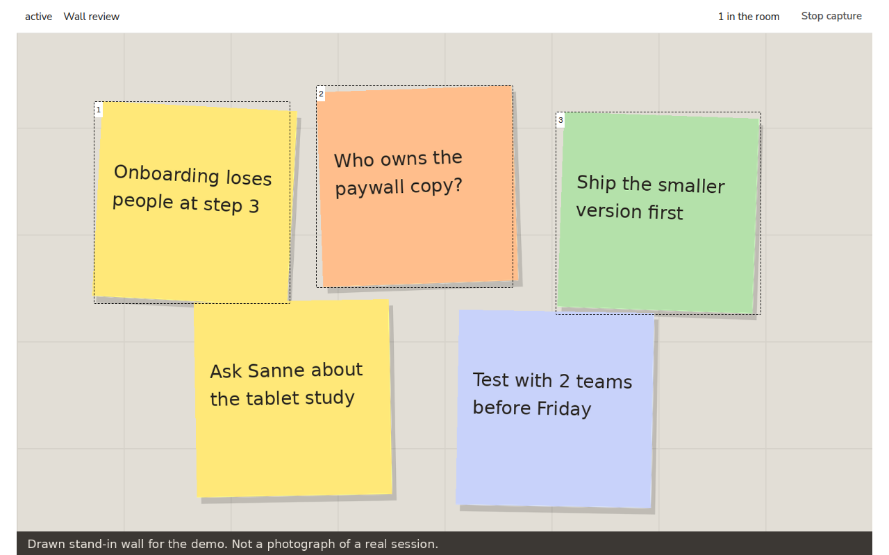
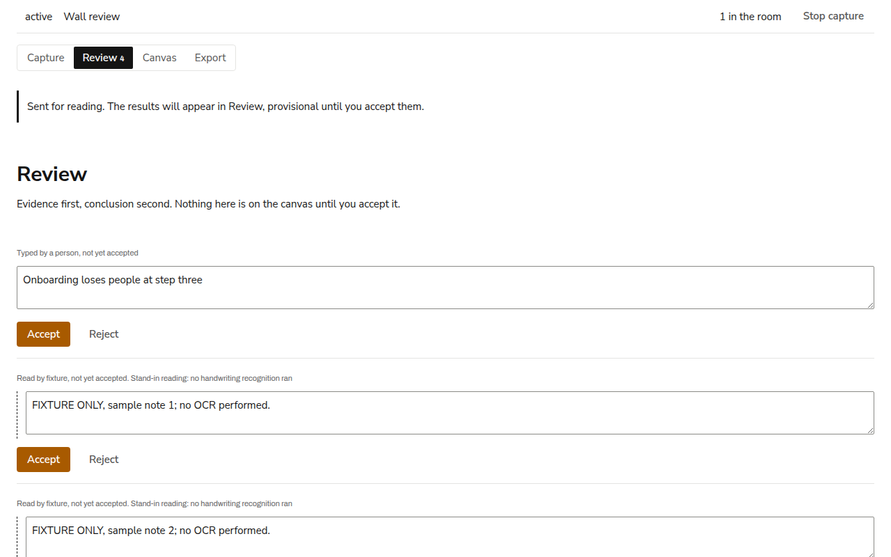
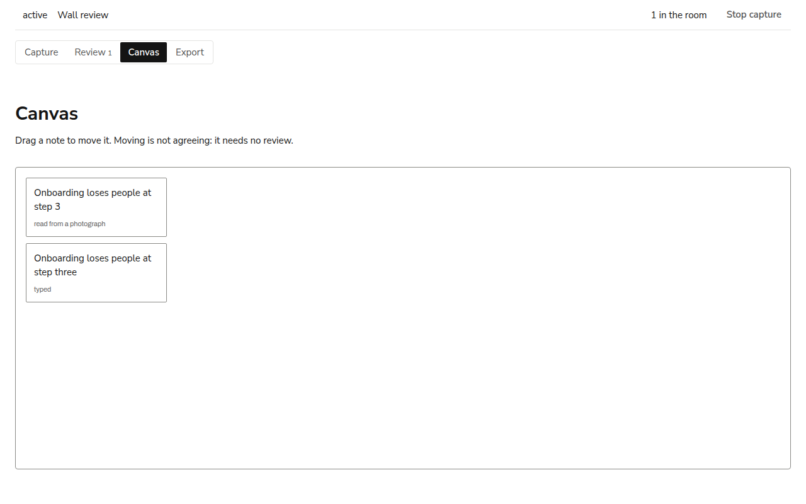

A meeting assistant that records what is said and what is put on the
wall during a design session, while the session is running.
Group 3 (tentative)
Luuk Brok, Pieter Borst, Julie van Veelen, Roselique van den Brink
The wall shown is a drawing made for the demo, not a photograph of a session
Introduction
Project background
Design teams in working sessions produce remarks, sketches and sticky notes.
Most of it is not recorded. Three problems recur.
1A remark made earlier in the session cannot be found again.
2The wall is photographed at the end, but the notes are rarely typed up.
3The board survives the meeting; the reasoning behind it does not.
Source: concept 001, ideation folder
Introduction
Users and context
Designers, technical participants in multidisciplinary teams, and Master’s students in
design programmes, in meetings and brainstorm sessions that combine spoken discussion, sketches,
sticky notes and photographs. Two to eight people, one to two hours, one facilitator, a shared screen.
An AI tool used during design meetings and brainstorm sessions. It takes the spoken
discussion and photographs of the room as input, and keeps a structured visual overview of the
meeting on the digital whiteboard while the meeting is running. Participants can ask it questions
and give it commands by voice.
Input
Speech in the roomPhotographs of the wall, sketches and screensTyped notesVoice commands
Overview
Themes and clustersDecisions and actionsOpen questionsNotes from the wall
On request
Answers about the meeting so far, with the moment citedSuggestions for next steps, marked as the tool’s
Source: the structured brainstorm notes of 11 September and concept 001
Introduction
Features
Live transcription of the discussion, with speaker labels.
F1.2, F1.3. Plumbing
Voice commands, such as “summarise this” or “add this to the planning”, carried out on the whiteboard.
F2.5, F2.6. Proposed
Photographs of the sticky-note wall become individual notes on the whiteboard.
F1.4 to F1.6. Built with a placeholder reader
A live overview of themes, decisions, actions and open questions, laid out rather than listed.
F2.1 to F2.4, F3.2, F3.3. Proposed
Questions about the meeting so far, answered live and citing the moment the answer came from.
F2.7, F6.3. Proposed
Anything the tool adds is provisional until a participant accepts it. Corrections are recorded.
F3.4, F3.5, F6.5. Built
Consent before capture, audio deleted after the session, transcripts anonymised.
F6.1, F6.2, F6.6. Built, audio proposed
Export of the canvas and the minutes; push to Miro or FigJam.
F5.1 to F5.3. Export built, push proposed
F-numbers: documentation/flowchart.md. Status of each function: documentation/proposal.md
Introduction
Voice commands
A participant says “add this to the planning”. The command interpreter decides whether the
sentence was addressed to the tool, works out what “this” refers to from the canvas and the last
minute of speech, and proposes one change to the whiteboard. A participant confirms it. When the
reference is ambiguous the tool asks rather than guesses.
How can what is said and written during a design session be recorded as it happens,
in a way that keeps the team’s own work distinct from what a model proposed?
Derived from the concept, the week 3 findings and the flowchart
Design principle
Provisional output
Anything produced by a model is marked provisional until a participant accepts it.
A provisional note has a dashed edge and names its source. Moving a note does not count as accepting it.
Onboarding loses people at step 3
Provisional, read by the placeholder adapter
Onboarding loses people at step three
Accepted by a participant
Flowchart F3.4 and F3.5; design system rules 16 to 18
Design
User journey
Diagram: documentation/flowchart.html, user journey tab. Dashed boxes are where a model runs.
Design
User journey, during the meeting
The middle band of the previous diagram. Input on the left, agents in the middle, the canvas and the participants on the right.
Design
System architecture
Diagram: documentation/flowchart.html, system architecture tab. Agent boxes describe responsibilities, not separate services.
Design
Functions in scope
The flowchart defines thirty-seven functions in six groups. Each one has a status:
built, plumbing (the contract exists, the model does not), proposed, or open.
7
F1 Capture
8
F2 Understanding
7
F3 Visualisation
5
F4 Session
4
F5 Output
6
F6 Trust
Filled: built. Half: plumbing. Dashed: proposed. Empty: open. Full table in documentation/proposal.md
Implementation
From photograph to notes
A participant marks each note on the photograph. A placeholder adapter returns a reading;
no handwriting recognition has been run. A participant corrects, accepts or rejects each reading.

Notes are marked

Readings arrive for review

Accepted notes reach the canvas
Captures of the client. Proposed automatic segmentation and reading: documentation/stack.md
Implementation
Speech pipeline
Nine stages are designed; three involve a model. A server contract, a browser chunker and a
placeholder transcriber exist. The wrapper for a local Whisper model is written and has not been run.
No speech recognition has been run.
A photographed wall is sent for reading. One reading is corrected and accepted, one is rejected,
and an accepted note is moved on the canvas. The readings are placeholders; the workflow around them is real.
The first test is whether notes on a real wall can be read well enough to be worth correcting.
The thresholds are agreed before the test. Speech capture follows, subject to consent from everyone present.
10photographs of real walls
80%of notes correctly separated
80%of notes correctly read
Test and thresholds: documentation/pipelines.md, unknowns table